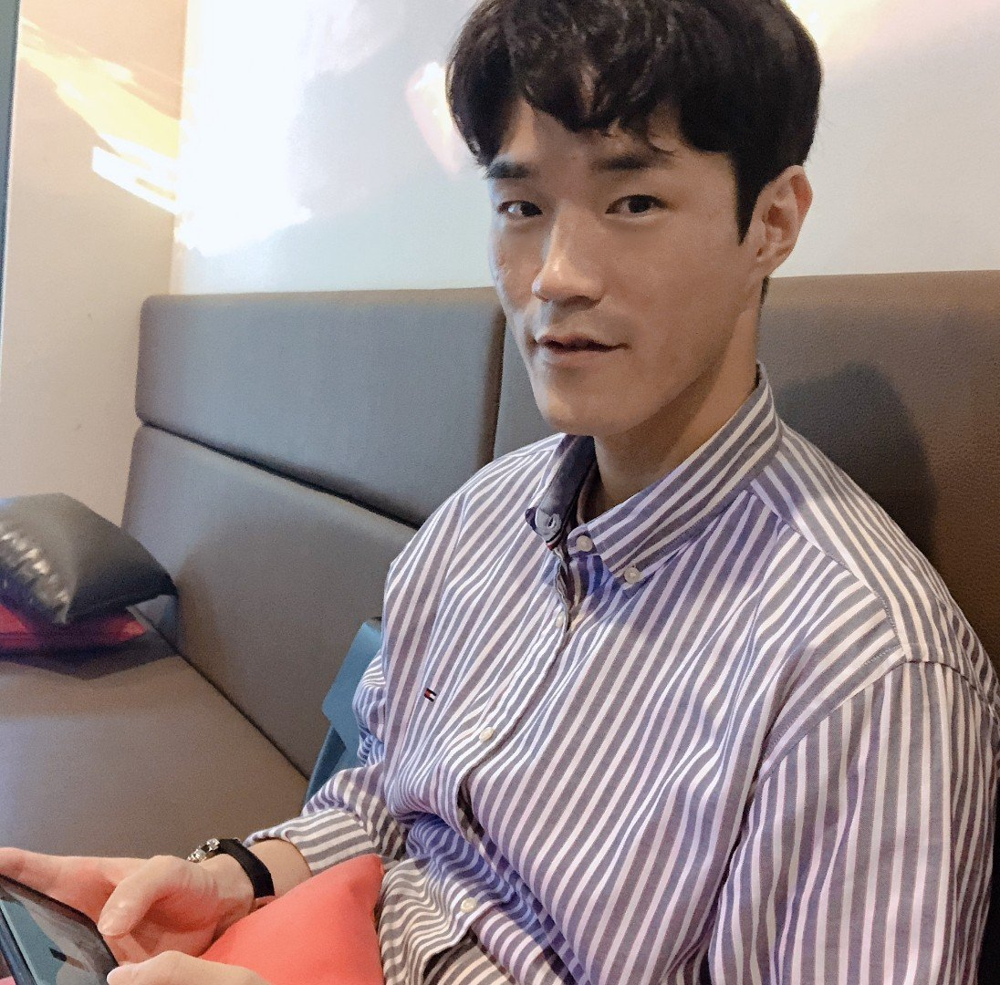

|
Insup Lee  CV / islee94@korea.ac.kr / Google Scholar
I am a Ph.D. candidate in Cybersecurity at Korea University, working at the intersection of AI and security. My research builds on five years at the Agency for Defense Development (ADD) and international projects with the UAE Ministry of Defense.
|
- Apr 2026: Mnemonic Hack has been accepted to ACM CCS 2026.
- Feb 2026: Our paper on multicore side-channel monitoring has been accepted to ACM/IEEE DAC 2026.
- Feb 2026: I was awarded the Korea University Graduate School Achievement Award.
- Nov 2025: LeakDiT has been accepted to IEEE Computer Architecture Letters.
- Oct 2025: Our paper on LLM-based CTI has been accepted to IEEE Access.
- Aug 2025: Our paper on DDoS detection has been published in JICS.
- Aug 2025: Our paper on drones has been accepted to IEEE Signal Processing Letters.
- Jun 2025: MuCamp has been accepted to IEEE Transactions on Information Forensics and Security (TIFS).
- Mar 2025: I was awarded commendations from the UAE Ministry of Defense and the UAE Ambassador.
- Dec 2024: Our paper on web shell detection has been published in JKIISC.
- Mar 2024: UniQGAN has been published in IEEE Transactions on Dependable and Secure Computing (TDSC).
- Ph.D. Candidate in Cybersecurity, Korea University, Seoul, Republic of Korea, 2019 - Present
- Dissertation: Domain-Specific Generative Models for Data Augmentation in Cybersecurity
- Advisors: Prof. Sangjin Lee and Prof. Seokhie Hong
- Expected Graduation: Aug 2026
- B.E. in Cyber Defense, Korea University, Seoul, Republic of Korea, 2014 - 2018
- Advisor: Prof. Jongin Lim
- Lecturer, Korea University, Seoul, Republic of Korea, Sep 2025 - Feb 2026
- Taught graduate-level course “Computer Networks”
- Research Engineer (Cyber Officer), Ministry of National Defense, Republic of Korea, Aug 2023 - May 2025
- Led international joint research on AI-based security with the UAE Ministry of Defense as PI ([J6])
- Taught cybersecurity courses “Penetration Testing” to UAE cyber defense personnel
- Researcher, Agency for Defense Development (ADD), Seoul, Republic of Korea, Jul 2018 - Jul 2023
- Analyzed nation-state APT campaigns using MITRE ATT&CK, developing NLP-based methods for TTP sequence analysis and attack group attribution ([J1]-[J3], [J5])
- Applied generative models (GANs, sequence models) for data augmentation in anomaly detection ([C1], [C2])
(C: conference / J: journal)
International Publications
 |
[C4] Mnemonic Hack: Recovering the Master Seed from Bitcoin Hardware Wallets via Side-Channel Attacks
J. Baek, G. Ahn, S. Park, D. Bae, G. Kim, I. Lee, S. Hong, and H. Kim ACM Conference on Computer and Communications Security (CCS) 2026 (BK21+ IF: 4) [paper] |
 |
[C3] Exploiting Per-Core Leakage: Electromagnetic Side-Channel Monitoring of Multicore Architectures
D. Bae, S. Park, I. Lee, Y. Jung, K. Lee, H. Kim, and S. Hong ACM/IEEE Design Automation Conference (DAC) 2026 (BK21+ IF: 3) [paper] |
 |
[J8] LeakDiT: Diffusion Transformers for Trace-Augmented Side-Channel Analysis
I. Lee, D. Bae, S. Hong, and S. Lee IEEE Computer Architecture Letters 2026 [paper] |
 |
[J7] Multi-Step LLM Pipeline for Enhancing TTP Extraction in Cyber Threat Intelligence
H. Kim, D. Lee, I. Lee, S. Lee, and S. Lee IEEE Access 2025 [paper] |
 |
[J6] Enhancing Modulation Classification via Diffusion Transformers for Drone Video Signal Processing
I. Lee, K. Alteneiji, and M. Alghfeli IEEE Signal Processing Letters 2025 [paper] |
 |
[J5] MuCamp: Generating Cyber Campaign Variants via TTP Synonym Replacement for Group Attribution
I. Lee and C. Choi IEEE Transactions on Information Forensics and Security (TIFS) 2025 (JCR IF Top 7.8%) [paper|pdf] |
 |
[J4] UniQGAN: Towards Improved Modulation Classification With Adversarial Robustness Using Scalable Generator Design
I. Lee and W. Lee IEEE Transactions on Dependable and Secure Computing (TDSC) 2024 (JCR IF Top 4.9%) [paper|pdf] |
 |
[J3] Camp2Vec: Embedding Cyber Campaign With ATT&CK Framework for Attack Group Analysis
I. Lee and C. Choi ICT Express 2023 [paper] |
 |
[J2] Exploiting TTP Co-occurence via GloVe-Based Embedding With ATT&CK Framework
C. Shin, I. Lee, and C. Choi IEEE Access 2023 [paper] |
 |
[J1] BAN: Predicting APT Attack Based on Bayesian Network With MITRE ATT&CK Framework
Y. Kim, I. Lee, H. Kwon, G. Lee, and J. Yoon IEEE Access 2023 [paper] |
 |
[C2] Anomaly Dataset Augmentation Using Sequence Generative Models
S. Shin, I. Lee, and C. Choi IEEE International Conference on Machine Learning and Applications (ICMLA) 2019 [paper] |
 |
[C1] Opcode Sequence Amplifier Using Sequence Generative Adversarial Networks
C. Choi, S. Shin, and I. Lee International Conference on ICT Convergence (ICTC) 2019 [paper] |
- S. Park, D. Bae, I. Lee, H. Kim, and S. Hong, “Electromagnetic Side-Channel Based Single-Execution Anomaly Detection for Embedded Systems,” in Proc. of the KIISC Summer Conference (CISC-S), May 2026.
- S. Park, D. Bae, I. Lee, H. Kim, and S. Hong, “EM-Based Anomaly Detection using a Dual-Domain Approach,” in Proc. of the KIISC Winter Conference (CISC-W), Nov. 2025. (Selected as an Outstanding Paper Award)
- J. Kim, I. Lee, C. Jeon, S. Kim, S. Hong, and S. Lee, “Reinforcement Learning for Parameter Optimization in CADO-NFS Polynomial Selection,” in Proc. of the KIISC Winter Conference (CISC-W), Nov. 2025.
- S. Park, D. Bae, I. Lee, H. Kim, and S. Hong, “A Statistical Time-Domain Approach to Anomaly Detection for Robotic-Arm MCU,” in Proc. of the KIMST Fall Conference, Nov. 2025.
- H. Park and I. Lee, “Enhanced DDoS Detection via Traffic Volume-Based Labeling and Transfer Learning,” Journal of Internet Computing and Services (JICS), vol. 26, no. 4, pp. 1-8, Aug. 2025.
- K. Kim and I. Lee, “User Behavior Embedding via TF-IDF-BVC for Web Shell Detection,” Journal of The Korea Institute of Information Security & Cryptology (JKIISC), vol. 34, no. 6, pp. 1231-1238, Dec. 2024.
- I. Lee, C. Shin, and C. Choi, “Mutating Cyber Camapaign With TTP Word Replacement,” in Proc. of the KIMST Annual Conference, Jun. 2023.
- C. Shin, I. Lee, and C. Choi, “Towards GloVe-Based TTP Embedding With ATT&CK Framework,” in Proc. of the KIMST Annual Conference, Jun. 2023.
- C. Choi, I. Lee, C. Shin, and S. Lee, “Cyber Threat Campaign Analysis Based on PEGASUS and RoBERTa Model,” in Proc. of the KIMST Annual Conference, Jun. 2023.
- I. Lee, C. Shin, S. Shin, S. Seo, and C. Choi, “Analyzing Cyberattack Campaign Similarity via TTP Sequence Embedding,” in Proc. of the KIMST Annual Conference, Jun. 2022.
- S. Shin, I. Lee, C. Shin, S. Seo, and C. Choi, “Cyber Campaign Analysis With TTP Embedding Using TF-IDF,” in Proc. of the KIMST Annual Conference, Jun. 2022.
- C. Shin, S. Shin, I. Lee, S. Seo, and C. Choi, “Classifying TTP Based on CIA Labeling,” in Proc. of the KIMST Annual Conference, Jun. 2022.
- C. Choi, C. Shin, S. Shin, S. Seo, and I. Lee, “Cyber Attack Group Classification Using Siamese LSTM,” in Proc. of the KIMST Annual Conference, Jun. 2022.
- C. Shin, S. Shin, S. Seo, I. Lee, and C. Choi, “Embedding and Training RNN to Estimating the Goal of Cyber Attack,” in Proc. of the KIMST Fall Conference, Nov. 2021.
- S. Shin, C. Shin, S. Seo, I. Lee, and C. Choi, “The Proposed Approach for Country Prediction With TTP-based Cyber Data Using GCN,” in Proc. of the KIMST Fall Conference, Nov. 2021.
- C. Choi, C. Shin, S. Shin, S. Seo, and I. Lee, “Deep Learning for Estimating Next Action of Cyber Attack,” in Proc. of the KIMST Fall Conference, Nov. 2021.
- Y. Park, S. Shin, and I. Lee, “A Study on Evaluation Method of NIDS Datasets in Closed Military Network,” Journal of Internet Computing and Services (JICS), vol. 21, no. 2, pp. 121-130, Apr. 2020.
- I. Lee, J. Kim, and J. Park, “Analysis of Weight Setting in Incremental Learning to Improve Real-Time Intrusion Detection,” in Proc. of the KIMST Annual Conference, Jun. 2019.
-
Method for Augmentating Cyber Attack Campaign Data to Identify Attack Group, and Security System Performing Same
C. Choi and I. Lee
Korea Patent Application Number. 10-2024-0176082, December 2, 2024. -
Information Identification Method and Electronic Apparatus Thereof
C. Choi, I. Lee, C. Shin, and S. Lee
Korea Patent Application Number. 10-2024-0006106, January 15, 2024. -
Method for Training Attack Prediction Model and Device Therefor
C. Choi, C. Shin, S. Shin, S. Seo, and I. Lee
U.S. Patent Number. US20230308462A1, September 28, 2023. -
Appratus, Method, Computer-readable Storage Medium and Computer Program for Generating Operation Code
C. Choi, S. Shin, and I. Lee
Korea Patent Number. 10-2246797, April 30, 2021.
-
KU Graduate School Achievement Award, February 2026
[pdf]
Korea University, Seoul, Republic of Korea -
Outstanding Paper Award, November 2025
CISC-W’25, KIISC -
Certificate of Commendation, UAE-ROK Engagement Program, March 2025
[pdf]
United Arab Emirates Ministry of Defense -
UAE Ambassador’s Commendation, March 2025
[pdf]
Embassy of the Republic of Korea to the United Arab Emirates -
Full Tuition Scholarship, Korea University, 2014 - 2018
Ministry of National Defense, Republic of Korea
{kind=link}
{kind=link}
{kind=link}
{kind=link}
- Reviewer, IEEE Transaction on Dependable and Secure Computing (TDSC), 2025
- Reviewer, IEEE Transactions on Information Forensics and Security (TIFS), 2026
- Reviewer, IEEE Transaction on Communications (TCOM), 2025, 2026
- Reviewer, IEEE Journal on Selected Areas in Communications (JSAC), 2025, 2026
- AI Cyber Challenge (AIxCC), DARPA and ARPA-H, USA, 2024.4 - 2024.8 [link]
- Participated in the semifinal round as a member of Team KORIA, submitting our cyber reasoning system that leverages LLMs for automated detection and patching of software vulnerabilities
- SW Outsourcing Development, KCMVP-Certified Cryptographic Module, 2017.6 - 2018.3
- Implemented a cryptographic module with 25,000 LoC in C - ARIA block cipher (modes: ECB, CBC, CTR), hash functions (SHA-256, SHA-512), and HMAC-based DRBG for Windows (.dll) and Linux (.so)
Last Update: April 2026